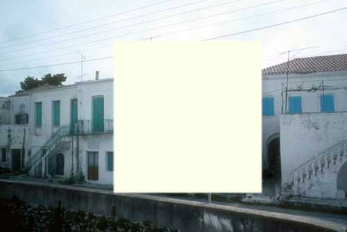

| Δραστηριότητα 1 |
«Μυλοπόταμος» Κυθήρων

Ποια από τις τρεις κατοικίες νομίζεις ότι λείπει από την παραπάνω γειτονιά; Μπορείς να αναγνωρίσεις σε ποια κατηγορία κατοικιών των Κυθήρων ανήκουν τα σπίτια που δείχνουν οι τρεις μικρές φωτογραφίες; Υπάρχουν (ή θα μπορούσαν να υπάρχουν) παρόμοια σπίτια στον τόπο σου; Να δικαιολογήσεις την άποψή σου.
Δες ολόκληρη τη φωτογραφία |